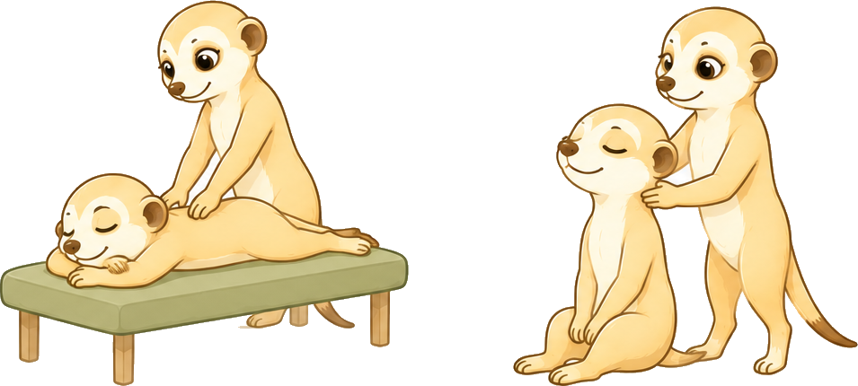
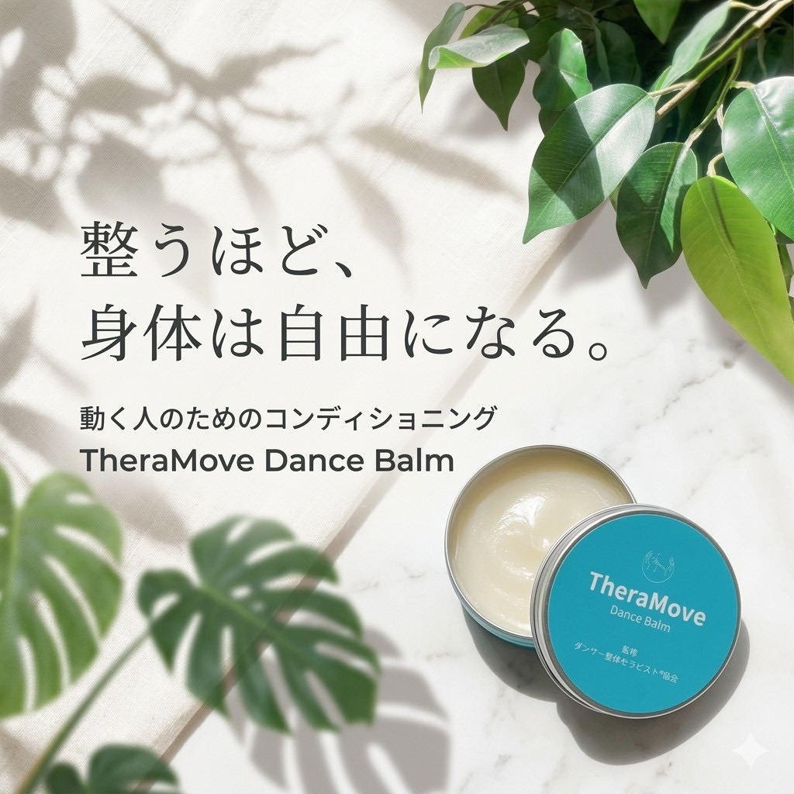

ダンサー整体とは
ダンサー整体は、痛みや疲労だけを見るのではなく、
「なぜその動きがしづらいのか」という原因を身体全体から考える整体です。
股関節だけ、肩だけといった部分的な施術ではなく、
神経・関節・全身のバランスを確認しながら、踊りやすい身体づくりをサポートします。
Re:moveでは筋肉を強く揉みほぐしたり、ボキボキと矯正するような施術は行いません。
強い刺激による施術では、身体が防御反応として筋肉を緊張させてしまうことがありますが、
ダンサー整体では身体への負担を抑えたソフトな施術で全身を整えていきます。
そのため、舞台前やレッスン前のコンディショニングにも取り入れやすく、
揉み返しを気にすることなく安心して受けていただけます。
ダンスをしている方に特におすすめの整体ですが、
身体を整えたい方であれば、ダンス経験の有無を問わず受けていただけます。

特徴
揉みほぐさない
強い刺激を加えず、身体への負担を抑えながらコンディションを整えます。
ダンス動作に着目
ダンス動作の特徴を踏まえ、身体の使い方や負担を考慮して施術を行います。
可動性・安定性・連動性
ターンやジャンプなどに必要な身体の連携を整えていきます。
こんな方へ
- 脚が上げにくい・股関節が詰まる
- 足先（ポイント）が綺麗に伸ばせない
- 左右で動きやすさが違う
- 踊ると腰が痛くなる
- 踊った後に疲労が残りやすい
- 開脚ができるようになりたい
- 舞台やレッスン前後に身体を整えたい

Home Care
TheraMove
Dance Balm
施術後のコンディション維持に
整えた身体を、
日常でもキープするために。
ダンサー整体の現場から生まれた
TheraMove Dance Balm。
レッスン前後のセルフケアや、
日々のコンディション維持をサポートします。
セッション時には実際にお試しいただけます。
セルフケア方法とあわせて使い方もご案内しています。
気に入っていただけた場合はその場でご購入いただけます。
遠方の方やリピート購入をご希望の方は、
オンラインショップもご利用いただけます。
Q & A
ダンサー整体についてのよくある質問
Q.ダンスをしていなくても受けられますか？
A.もちろん受けていただけます。
Re:moveではダンスをしている方のサポートを中心に行っていますが、「動きやすい体を作りたい」「姿勢を整えたい」「柔軟性を高めたい」といった方にも対応しています。
「ダンサー整体」という名称でも、ダンス経験の有無に関わらずご相談ください。
Q.ダンサー整体ではどんな施術を行いますか？
A.ダンサー整体では、身体の状態や動きのクセを確認しながら、ダンス動作に必要な「可動性・安定性・連動性」を整えていきます。
単に筋肉を緩めるのではなく、ターン・ジャンプ・ポジション保持などの動きに対して、身体がどう使われているかを丁寧に見ていきます。
Q.ダンスレッスンとの違いは何ですか？
A.ダンスレッスンは「振付や技術を習得する場」であるのに対し、ダンサー整体は「その動きを可能にする身体の状態を整えること」に焦点を当てています。
同じ動きを練習しても上達しにくい場合、原因が“技術”ではなく“身体の使い方や状態”にあることがあります。
その部分を整理することで、レッスンでの習得スピードや安定性の変化を目指します。
Q.ダンサー整体は1回でも変化を感じますか？
A.一度の施術で「動きやすさ」「重心の安定」「可動域の変化」などを感じる方が多いです。
ただし、長年のクセや使い方のパターンが関係している場合は、継続していく中で少しずつ変化していくことが一般的です。
状態や目標によって個人差があります。
Q.ダンサー整体は怪我予防や身体のケアにも対応していますか？
A.怪我の予防やケアを目的としたコンディショニングにも対応しています。
ダンスによるオーバーユース（使いすぎ）や疲労の蓄積による動きにくさに対して、身体のバランスを整えることで負担を軽減していきます。
状態に合わせて無理のない方法で整えていきます。
Q.ダンサー整体はどこで受けられますか？
A.Re:moveでは、渋谷・恵比寿・横浜エリアでダンサー整体を行っています。
スタジオの詳細な場所は、ご予約時にご案内しています。
遠方からお越しいただく方もいらっしゃいますので、アクセスについてもお気軽にご相談ください。
Q.舞台前のメンテナンスはいつ受けるのが良いですか？
A.Re:moveの施術は舞台前後を含め、どのタイミングでも受けていただけます。
強い刺激や揉み返しの出るような施術は行っていないため、本番前のコンディショニングから終演後のケアまで、その時の状態に合わせて対応しています。
Q.痛みがある場合でも受けられますか？
A.強い痛みがある場合は状態によりますが、多くの場合は無理のない範囲で対応可能です。
ただし医療行為ではないため、治療を目的とした施術ではなく、動きやすさや負担軽減を目的としたコンディショニングとして行います。
Q.揉み返しが起こることはありますか？
A.ダンサー整体は揉みほぐさない施術です。
そのため、揉み返しが起こることはありません。
Q.ボキボキと矯正する施術を行いますか？
A.ダンサー整体はボキボキと矯正するような強い施術は行いません。
リラックスした状態で受けていただけます。
Q.「ダンサー整体」と「ダンス上達サポート」は何が違いますか？
A.ダンサー整体は、踊る前後のコンディショニングや身体の調整を目的としたメニューです。
ダンス初心者からプロダンサーまで幅広く対応しています。
ダンス上達サポートは、ダンスの上達そのものに課題を感じている方に向けたメニューです。
身体の使い方や発達的な要因など、上達を妨げる背景にもアプローチし、動きそのものの質を変えていくことを目的としています。
Contact
ご相談・ご予約はこちら
「ダンサー整体が自分に合っているのか知りたい」
「今の悩みにはどんな方法が合っているのか相談したい」
そんな方もお気軽にご相談ください。
ご予約・ご相談は公式LINEより受け付けています。
現在のお悩みや目標をお伺いしたうえで、
お身体の状態に合わせた最適なご提案をいたします。
ご不明な点があれば、InstagramのDMからも
お気軽にお問い合わせください。